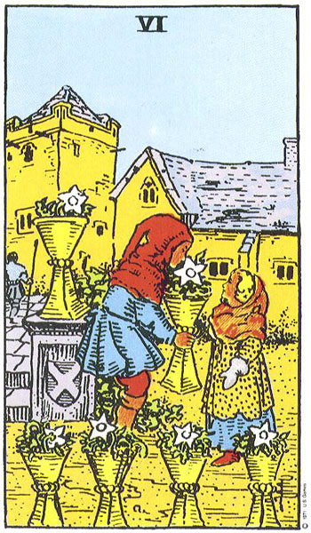

Acuario
El Seis de Copas representa el aprender a dar y recibir en el plano emocional.
Es tiempo de sanar las heridas del pasado. Sí, se que es difícil y es traumático pero debes dejarlo ir para que puedas progresar en la vida. Hazlo por ti y no por las personas que te hicieron daño. Este mes presenta una oportunidad para que visualices como te verás en el futuro. Solo así podrás obtener lo que te mereces.
Recuerda los viejos tiempos. Revive la pasión. Si no tienes pareja es posible que te encuentres con alguien del pasado próximamente.
No esperes nada a cambio. Es el momento de dar sin recibir Aprende de las experiencias vividas. Te hace más fuerte.
Ver otro signo
Volver al inicio
Programar una lectura profesional